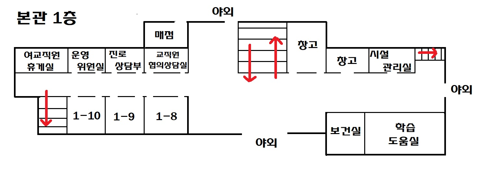
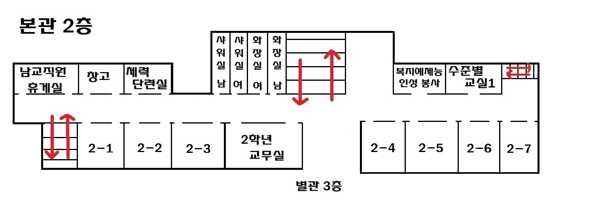
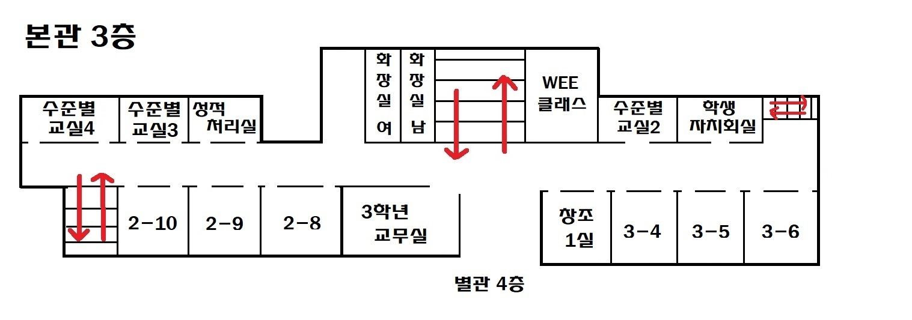
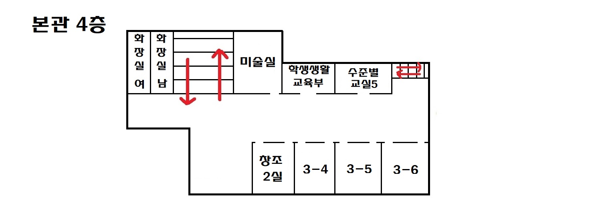
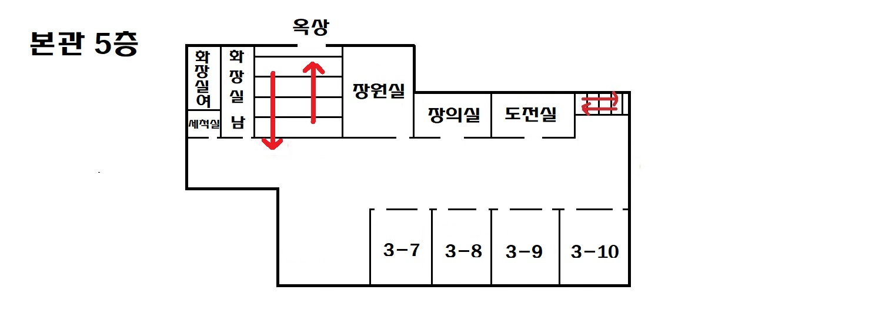
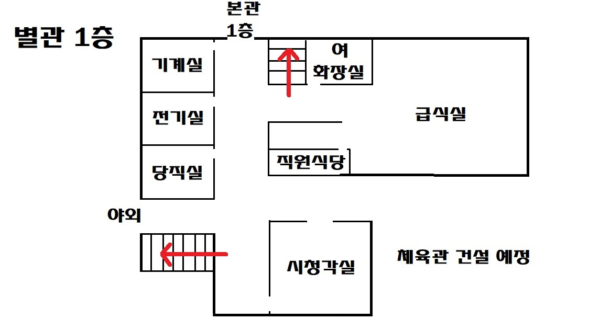
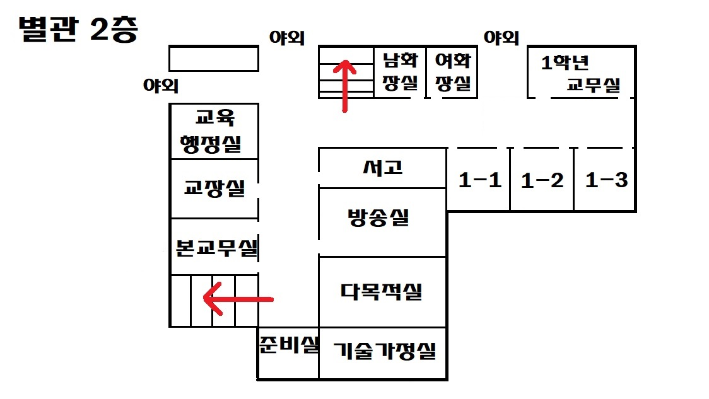
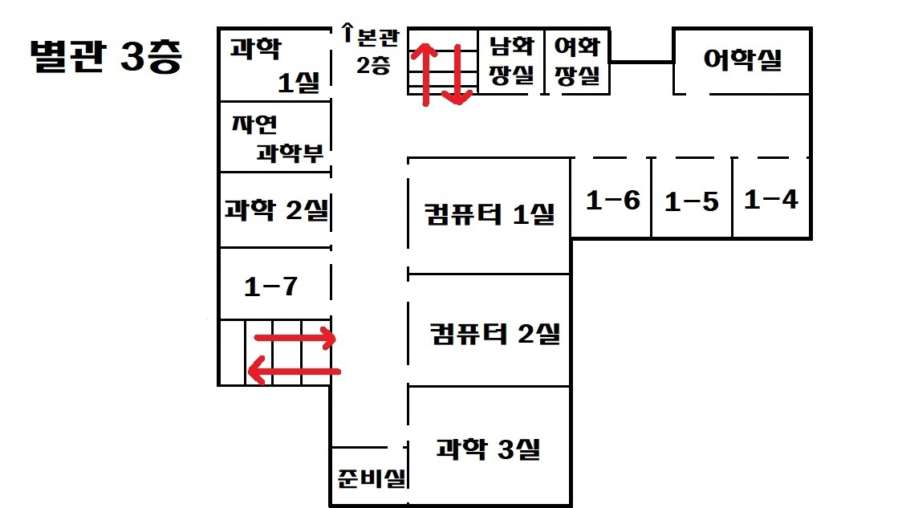
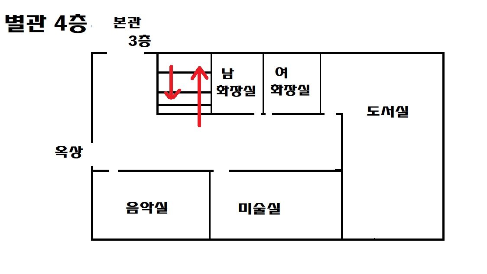

조원고등학교
메인
갓동진의 어리바리한 공방
서동찬의 죠죠서기 교실
조원고등학교 구조
조원고등학교는 본관과 별관으로 나누어져 있으며 본관은
나래관
, 별관은
슬기관
으로 불리고 있다
1학년 남자반은 별관, 1학년 여자반,2,3학년은 본관을 사용하고있다.
본관 ( 나래관 )



별관 ( 슬기관 )


1층에 여자반 자리가 없는지 3층 별관에 여자반이 하나 있다.
소개
버스노선
체육관
메인